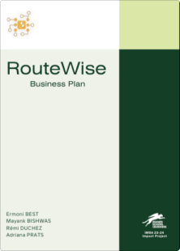
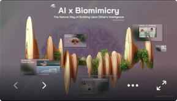

MBA Archive
Currently, am pursuing an International MBA (2023-2024) from the Rennes School of Business in France. It is a general MBA with a specialization in ‘Managing AI-led Business’. The program includes ~30 modules across 3 semesters, 2 international study trips, and weekly French language classes.
Below are some of the interesting assignments (individual and group) I worked on across the 5 themes of my iMBA and the Capstone Project.
And, clearly, am more of a generalist. Because having been groomed at startups, while my forte is SEO Content, I’ve held/performed the tasks of (in no particular order):
Capstone Project

For our final MBA project, we had to form a group of students (4 members) and ideate, design, and present a Business Plan that must have a positive Social Impact.
Our team decided to work on a business plan called RouteWise — it is a socially conscious tech startup at the intersection of mobility, advertising, and sustainability that primarily aims to alleviate the economic condition of drivers using the profit generated from the value exchange between consumers and SMEs in a region.
Our team decided to work on a business plan called RouteWise — it is a socially conscious tech startup at the intersection of mobility, advertising, and sustainability that primarily aims to alleviate the economic condition of drivers using the profit generated from the value exchange between consumers and SMEs in a region.

Digital and Startup Innovation

ML in Business Intelligence ft. Dall-E: Delved into how an AI image generator works — the input, output, model, training, testing, and more. Also, discussed its evolution, business implications, and use cases. <View Prezi PPT>
Managing AI-enabled Business ft. Upstart: Drew a diagram depicting the current value proposition enabled by Upstart’s AI business model and envisioned the most plausible scenario of Upstart’s evolution viz. Disruption by Value Inversion.
AI in Business ft. Biomimicry: Drew parallels between AI and Biomimicry, and how the latter discipline can inspire the former to develop a symbiotic relationship with us. Also, reflected on the possibility of a Happiness Algorithm. <View Prezi PPT>
Supply Chain Management ft. Mercado Libre: Co-led the audit and implementation of AI in the supply chain of Mercado Libre - LATAM’s largest e-commerce. Also, devised a Box-to-Box Recycling initiative suggestion for their sustainability.
Open Innovation ft. SIEMENS: Co-led MBA project on needs, challenges, and methods of enterprise-level idea crowdsourcing based on the case study of SIEMENS.
Organizational Intelligence
Managing Knowledge-based Organization ft. NASA: Co-led the project on collecting, sharing, and utilizing dynamic knowledge/database in a large organization (in this case, NASA) where success is based on tacit knowledge over explicit one.
Managing People & Organization ft. NVIDIA: Co-led the human resource management audit for NVIDIA covering: employer branding, recruitment process, compensation & benefits, etc.
Managerial Accounting ft. GE Vernova: Co-led the executive-level audit of GE Vernova on how they manage their business, people and green project.
Corporate Strategy: Performed market research - with public data - on positioning a new agro. business in the US.
International Business Setting
Geopolitical Risk Management: Played the role of geopolitical consultant for the Ethiopian government to negotiate a Chinese offer under the Belt & Road Initiative. Also, audited political, economic, and cultural implications to draft strategic contract terms for mutual benefit.
Managing Cultural Complexities: Drafted guidelines for navigating cultural differences in a professional setting for an imaginary Indian Oral Hygiene Product seeking to expand in Germany.
Personal and Group Insights
Group Communication ft. 12 Angry Men: Co-led the project on Leadership, Communication & Conflict Management featuring 12 Angry Men.
Consumer Behaviour: Co-led the project on consumer segmentation, decision-making process & target strategies for an Entomophagy (insect-based diet) fast-food brand.
Concise Presentation: Presented my decision-making framework called ‘Sprouts for Breakfast’ in Pecha Kucha style: 20 slides, 20 seconds each.
Quantitative Insight: Used R programming to unfold data from an experiment on gender’s influence on decision-making methods >> R-File for the Project
Positive Corporate Impact
Triple Bottom Line Goal Setting: Co-led the audit, practical goal-setting, and partnerships of UN SDGs in the hospitality sector. Also, created a framework to pick sustainability goals to focus on basis the Double Materiality Matrix.
Sustainable Project Management: Co-led the case study on the challenges of introducing sustainability into project management.
Sustainable Marketing: Co-led project on ideating, positioning, and branding a sustainable mobility solution.